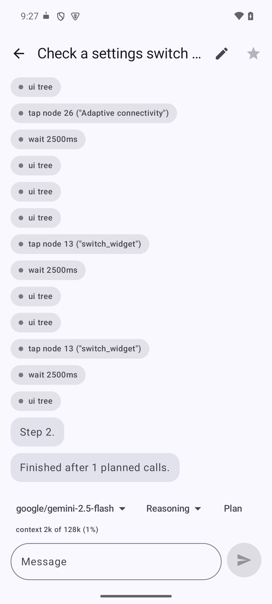
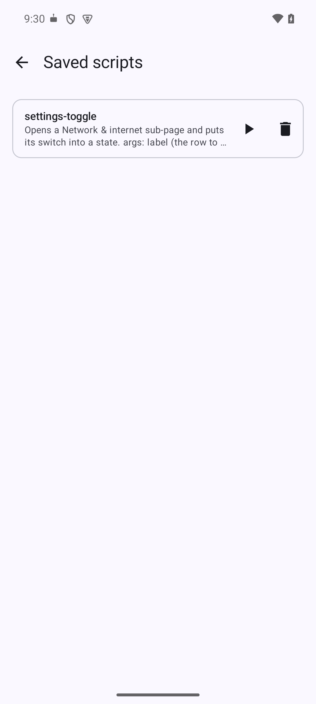
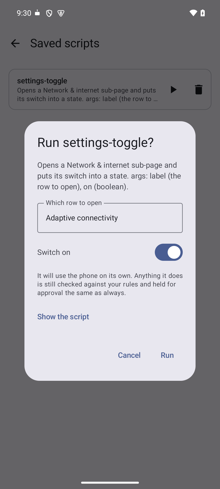

You type a task, a model drives the phone.
Both recorded on a real phone, nothing sped up or cut. Neither task has an API, an integration or an export behind it: the agent is reading the same screen you would and tapping the same buttons.
The app registers an AccessibilityService, the same mechanism a screen reader
uses. That is where all of its privilege comes from: it can read every window on screen and tap
anything in it. Nothing is installed on a computer and the phone does not need to be rooted.
You give it a task in plain words. It reads the screen, decides on one action, takes it, then reads the screen again, until the task is done or it needs to ask you something.
It runs on your own API key against whichever OpenAI-compatible endpoint you point it at. There is no account, no backend behind it, and no telemetry. Your screen goes to the provider you choose and to nobody else, unless you add an MCP server, which is the one way anything reaches a second destination.



Every build is signed with the same key, so a new version installs over the top of the old one. An APK from anywhere else will not, and should not be trusted to.
FLAG_SECURE and capture black.When it hits one of these it says so, rather than reporting a step it did not take.
Google's policy allows the accessibility APIs only for apps that exist to help users with disabilities. An app that uses the same APIs for general automation does not qualify, whatever it does with them. So the only way to distribute it is sideloading, and the only way to install it is to allow your browser or file manager to install unknown apps.
That cuts both ways, so it is worth being plain about it: you are installing something that can read and tap anything on your screen, from a download rather than from a store review. The controls below are in the app because of that, not in spite of it.
Three layers, checked before every action.
One per line, first match wins:
deny * in com.*bank*, ask type_text matching (?i)password|otp,
allow tap in com.android.settings. They hold whether or not anyone is watching
the phone.
Never ask, ask before risky steps, or ask before every step. The middle one is the default. Three things count as risky: a button whose label sounds irreversible, such as send, pay, delete, post or confirm; a money or password app in the foreground; and any MCP tool, because those act somewhere other than this phone.
Answering "Always" turns that decision into a rule, scoped to the app it was granted in, so you are asked once rather than every time.
Set per chat. The agent is handed a looking-only tool list until you approve the plan it proposes, so it cannot touch anything before then. This is enforced by the app rather than asked for in a prompt.
A follow-up carries on the real exchange rather than starting over, a run the system killed can be picked back up where it stopped, and long-pressing any message copies the chat up to that point into a new one, so you can try a second approach without losing the first. All three work because a chat is a log of what happened rather than a summary of it.
Set a second, cheaper model and the run uses it for mechanical steps, tapping and looking and waiting, then goes back to the chosen model to plan, to recover from anything unexpected, and whenever you say something. In testing that was the difference between $0.07 and $0.016 for the same task.
Some steps cannot be decided in advance: tapping a toggle that is already on turns it off, and a list has to be scrolled until the thing appears, however many swipes that takes. The agent can write a short Lua script and run it on the phone instead of paying a round trip to the model between every pair of taps.
phone.open("Settings")
for _, want in ipairs { "Wi-Fi", "Bluetooth", "NFC" } do
local node = phone.waitFor({ text = want }, 4000)
if node then phone.ensure({ text = want }, true) end
endA script gets no privilege for being a script. Every action inside it goes out through the same path as one the model asked for directly, so your rules and your approval mode apply to each tap in a loop, and every one of them lands in the chat log. The language holds the string, table and math libraries and the device functions, and nothing else: no file, network, class-loading or reflection access, not restricted but never loaded. A script stops after 120 actions or 90 seconds however it loops, and it cannot catch that limit and carry on.
A script written into a call is gone when the chat scrolls. Saving one under a name, with a sentence about what it does, means calling it later costs a name and its arguments rather than thirty lines. Only the names and descriptions go in the prompt. One that will not compile is refused at save time rather than failing inside a call that was relying on it.
Settings, then Saved scripts, gives each one a play button. A script says which values it wants, so this is a form rather than a prompt: a switch for a yes-or-no, a field for a name. There is no model in it and nothing to pay for, because the script already says what to do. What it does on the way is approved and recorded exactly as if you had asked for it in words.
The things you ask for repeatedly, kept so you do not retype them. Choosing one opens a new chat with the task already written and waiting, in case this time needs a detail changed.
What you would tell someone using one app for the first time: where the button actually is, what the confirmation looks like, what to avoid. It makes the agent reliable somewhere it was clumsy. Only the name is loaded until that app is in front, so knowing twenty apps costs no more per task than knowing one.
Tools that are not on this phone, alongside the ones that are. Streamable HTTP with a bearer token or none. OAuth sign-in and stdio servers are not supported.
A small card that floats over whatever app the agent is working in. It says what the agent is doing, asks you before anything irreversible, and carries a stop button, so you can follow a run and halt it without returning to the app. Questions also reach your notifications, and turning on one or the other matters: with both off, the agent can only reach you inside the app.
There is no backend, so a reinstall would otherwise be total loss and a second phone would start from nothing. Settings, then Back up and restore, writes one file holding everything: chats with their full history, scripts, saved tasks, playbooks, rules, memory, servers and settings. Opening that file on another phone brings it all across, and the first-run screen offers the same thing, because someone reinstalling already has their key in the file.
Importing merges rather than replaces. New entries are added and anything sharing an id is updated, so opening a backup on a phone already in use never deletes what was only there. The API key and any server tokens travel by default, since a restore without them cannot reach a provider, and you can leave them out when the file is going somewhere you would not put a password.
Settings, then Diagnostics, then Export bundles the current chat, your settings and the state of the permissions into one file you can send with a bug report. It never includes your API key, any server token, or anything typed into a password field.